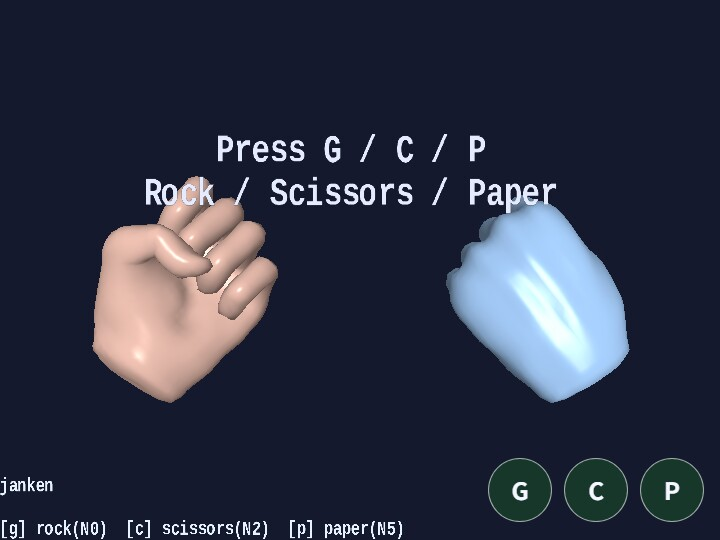

janken
English | 日本語

Overview
- This sample plays rock-paper-scissors by using the hand model from
samples/gltf_loader/hand.glbtogether withAnimationState - Two hands are displayed at the same time, with the left side acting as the user and the right side acting as the app
- The user chooses a hand with
G / C / P, while the app chooses its hand from a random value on the same frame - Touch buttons are also shown at the bottom of the screen, and on desktop you can press
G / C / Pdirectly there as well hand.glbis built only once, and then two hands for player / CPU are created withinstantiate()from that runtime, so geometry and GPU buffers are shared while animation runtime progresses independently- Each hand has its own
ActionandAnimationState, so even when the same asset is used, the animations can play separately - The operation guide and current state are aligned through
app.message.setLines(), while only the win / loss result is displayed at the center with a shortMessagescaled to 2x - The two hands are shown from a slightly pulled-back, slightly upward-looking view and rolled about 30 degrees to the left and right
- Hand transitions for rock-paper-scissors share
entryDurationMs = 250, so each next hand is reached in about 0.25 seconds
How to Run
- Open ./janken.html
- Use a browser with WebGPU support, and check the help panel and HUD together with the sample when needed
webg Features Used
WebgApp: initializesScreen / Shader / Space / Input / Messagetogether, builds the shared runtime once withapp.message.setLines()andloadModel(..., { format: "gltf", instantiate: false }), then creates two hands withruntime.instantiate()Action: plays the hand key ranges asN0 / N2 / N5actionsMessage: displays a short ASCII win / loss title largely at the center
Checkpoints
- Confirm that
Gcorresponds to hand poseN0=12-13,Ccorresponds toN2=4-5, andPcorresponds toN5=10-11 - Confirm that even if the same hand is entered repeatedly, the animation restarts through a self-transition
- Confirm that the guide is shown at the bottom, the status at the top, and only the result is shown in the large center
Message
Controls
G: play rockC: play scissorsP: play paperSpace: reset the round and the display to the initial state- Touch buttons: show
G / C / Pon both desktop and mobile and handle them with the same key names as the keyboard
Notes
- This sample uses the pose mapping of the hand asset as follows
- Rock:
N0=12-13on the hand - Scissors:
N2=4-5on the hand - Paper:
N5=10-11on the hand AnimationStateis not used to improve playback quality itself, but to organize which hand action should be started- In
janken,AnimationState.setState(..., force: true)is called on every input event so the action can restart even when the same hand is chosen - The two hands are generated separately through
runtime.instantiate(), so even though they share the same mesh resources, the runtime state ofSkeletonandAnimationis separate - In
hand.glb,GusesN0 12-13,CusesN2 4-5, andPusesN5 10-11